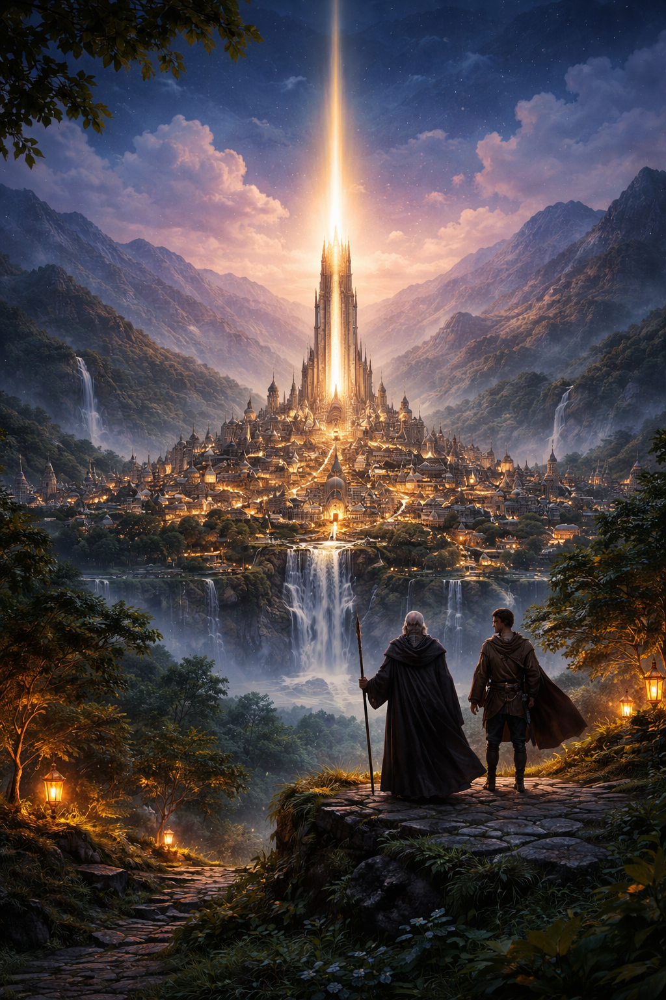
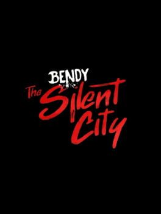
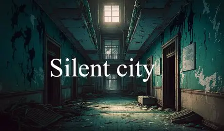
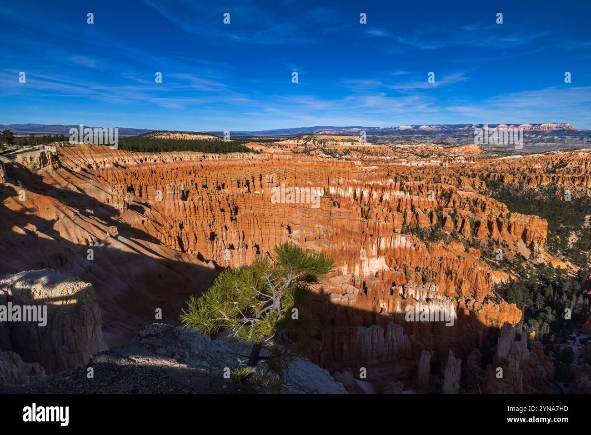
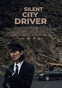

**The Story of the Silent City** In a faraway place beyond the mountains and hidden behind thick clouds, there was a city called **Veloria**. The people who lived there believed that their city was blessed because it never experienced storms, earthquakes, or disasters. The sky was always calm, and the air smelled like flowers every morning. Veloria was not like other cities. It was silent. Not because people did not talk, but because the city itself was built in a way that absorbed sound. The walls were made of a special stone that softened noise. Even the streets were designed to make footsteps quiet. Visitors often described it as “walking inside a dream.” At the center of Veloria stood a tall tower known as **The Tower of Light**.

Every night, the tower glowed softly, lighting up the city like a moon that never moved. It was said that the tower protected the people from darkness, fear, and misfortune. For many years, the citizens lived peacefully. Children played in the gardens, merchants sold fresh bread and fruit, and families spent their evenings under lanterns telling stories. It seemed like the city would remain perfect forever. But one day, something unusual happened.A traveler arrived at the gates of Veloria. His clothes were dusty, his boots were torn, and his eyes looked like they had seen too much. The guards questioned him, but the traveler did not speak immediately. Instead, he looked around the city walls as if searching for something. Finally, he said in a low voice, “I have been walking for weeks to reach this place. I need to warn you.” The guards laughed. “Warn us? About what? Our city is safe.” The traveler shook his head. “No city is safe forever.” The guards didn’t believe him, but they allowed him inside. As he walked through the streets, the people noticed how different he was. His face looked tired, and his eyes carried fear. The traveler made his way to the Tower of Light. At the base of the tower, he found an old man sitting beside the entrance. The old man wore a cloak and held a wooden staff. His beard was white, and his eyes were sharp like a hawk’s.

The traveler bowed. “I have come to speak to the Keeper of the Tower.” The old man replied, “I am the Keeper. Speak.” The traveler took a deep breath. “Beyond the mountains, there is a land of endless shadow. It is spreading. Villages are disappearing. People are vanishing. The darkness is moving toward Veloria.” The Keeper’s face remained calm, but his grip tightened on the staff. “How do you know this?” he asked. The traveler answered, “I escaped it. I saw it consume everything. The shadow is alive. It does not just cover the land—it steals the light.” The Keeper stood slowly and looked up at the tower. The glowing light was still strong, but it flickered for a second. It was so small that no one else noticed, but the Keeper did. That night, the Keeper called for a meeting in the city hall. The leaders of Veloria, the merchants, and the strongest guards gathered together. The traveler explained everything again. But many people laughed. One leader said, “You are just trying to scare us. Veloria has always been safe.” Another said, “Our tower is powerful. It will protect us.”But the Keeper spoke firmly. “The tower is strong, but it is not immortal. We must prepare.” The city leaders argued. Some wanted to listen, others wanted to ignore the warning. The traveler then said something that silenced everyone. “The shadow is not afraid of walls. It is afraid of only one thing: **truth**. And truth is often hidden.” The room became quiet.

The Keeper asked, “What do you mean by that?” The traveler pointed toward the Tower of Light. “That tower was built with a secret. And secrets always have a cost.”That night, the Keeper went alone into the tower. For the first time in years, he climbed the spiral stairs to the highest room. There, he found an old book sealed with a chain. It was covered in dust and written in a language only the Keeper could understand. He opened the book. Inside, he discovered the truth. The Tower of Light was not powered by magic stones or divine blessings. It was powered by something far more dangerous: **a trapped piece of darkness**. The builders had captured a shadow long ago and locked it inside the tower. The light existed because the tower was constantly fighting the darkness within. The Keeper’s hands trembled. If the darkness inside the tower ever escaped, Veloria would not just lose its light.

It would become the center of the spreading shadow. The next morning, the Keeper called the traveler again. “You were right,” the Keeper said. “The shadow is coming, and our tower is part of it.” The traveler nodded. “Then you must destroy the tower.”The Keeper looked shocked. “If we destroy it, the city will be plunged into darkness.” The traveler replied, “Better darkness that can be fought than darkness that owns you.” The Keeper knew the traveler spoke the truth, but the decision was impossible. The tower was the heart of Veloria. People worshipped it. Children grew up believing it was their guardian. Destroying it would destroy the people’s hope. Days passed, and strange things began to happen. The air became colder. The flowers in the gardens started to wilt.

The glow from the tower weakened every night. The people began to notice. One evening, a child screamed in the street. A shadow moved without any object creating it. The citizens panicked. Some ran into their homes, others prayed, and some shouted at the city leaders. The Keeper gathered the guards and said, “The time has come. We must protect Veloria.” The traveler volunteered to help. He said he knew the ways of shadow creatures. He had fought them before and survived. That night, the city prepared. Torches were lit, weapons were sharpened, and the tower’s entrance was guarded. The Keeper stood at the top of the tower holding the ancient book. He could feel the darkness inside the walls. It was like a heartbeat, slow but growing stronger.Then it happened. The tower flickered. The entire city went silent. And the light went out. For the first time in history, Veloria was completely dark. The people screamed. The guards tried to calm them, but fear spread faster than any fire. Suddenly, the shadows began to move again. They crawled like smoke across the ground. They climbed walls and slipped through windows. The traveler shouted, “Do not run! Shadows grow stronger when you fear them!” But it was too late. The city was full of panic. The Keeper realized the tower was breaking. He ran down the stairs, his cloak flying behind him. At the base of the tower, he met the traveler. “The darkness is escaping,” the Keeper said. The traveler pointed toward the sky. A thick black cloud was forming above Veloria. It wasn’t a storm cloud. It was alive. The Keeper looked at the tower. It was shaking. Then he made his choice. He raised his staff and slammed it into the tower’s foundation. The ground cracked, and the tower began to collapse. The people watched in horror as their sacred tower fell. But as the tower broke apart, a bright flash of light exploded from within it. The trapped darkness screamed like a thousand voices and was pulled into the sky, torn apart by the light. The cloud above Veloria shattered. The shadows on the streets disappeared. And for a moment, the city was quiet again. When the dust cleared, the Tower of Light was gone. Veloria stood without its guardian. The people cried. Some fell to their knees. Others blamed the Keeper. Some blamed the traveler. But the Keeper raised his voice and said something that became legendary: “The tower did not protect us. **We protected ourselves.** Light is not a building. Light is courage.” The traveler smiled for the first time. Over the next months, the city rebuilt. The people learned to create lanterns, build stronger walls, and protect one another. They no longer depended on a single tower. They became stronger than they ever were. Years later, Veloria was no longer called the Silent City. It became known as **The City of Brave Light**. And the traveler? He left without saying goodbye, continuing his journey to warn other lands. But the people of Veloria never forgot him. They told the story of the day darkness came, and how their city learned that real light is not something given—it is something earned. And as the children grew older, they looked up at the night sky, not searching for the tower’s glow, but for the stars. Because they understood something important: Even when everything goes dark,